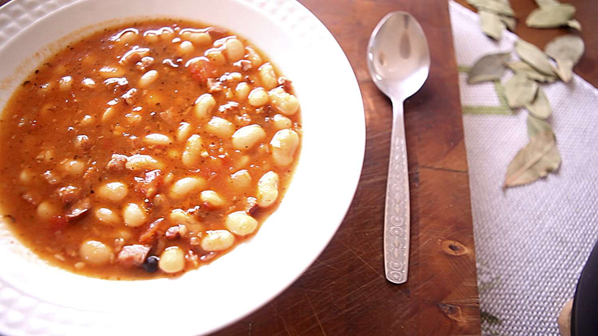

Home
Baked Beans

Description
A hearty and satisfying Polish stew with cannellini beans, bacon, and kielbasa. Served with crusty bread it's a
meal that sticks to the bones, perfect for a cold winter's night!
Ingredients
- 2 ½ cups dry cannellini beans
- 1 tablespoon vegetable oil
- 10 slices bacon, cubed
- ½ (16 oz) ring kielbasa sausage, cubed
- 2 onions, chopped
- 2 bay leaves
- 4 whole allspice berries
- 1 (14.5 ounce) can chopped tomatoes
- dried marjoram, or to taste
- 1 clove garlic, minced
- salt and ground black pepper to taste
- 1 tablespoon butter
- 1 tablespoon all-purpose flour
- 1 teaspoon paprika (Optional)
Steps
- Place cannellini beans into a large container and cover with several inches of cool water; let soak 8 hours to
overnight. Drain and add to a large pot. Cover with fresh water and cook on low heat until beans are tender, 45
minutes to 1 hour.
- Meanwhile, heat oil in a skillet over medium-high heat while beans are cooking. Add bacon and sausage and cook
until browned, 5 to 10 minutes. Transfer meats to a bowl, reserving some of the grease in the skillet.
- Cook onions in the reserved grease until browned, 5 to 10 minutes. Add to bowl with meats.
- Stir meat mixture, bay leaves, and allspice into the cooked beans and bring to a simmer. Add tomatoes, marjoram,
garlic, salt, and pepper, and continue to simmer, 10 to 15 minutes. Add water if there is not enough liquid in the
pot.
- Melt butter in a small saucepan over low heat, add flour, and stir into a paste. Remove from heat and add to
stew; stir in paprika powder. Simmer until stew has thickened, about 15 minutes.